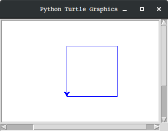
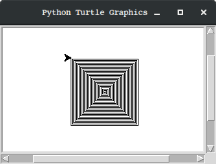

Juguem amb la tortuga
Python ens ofereix moltes eines interessants per a aprendre a programar. Una
d'elles és el mòdul turtle (tortuga)
Considera el següent exemple:
1"""
2 turtle_square.py
3 Demostració de l'ús de Turtle dibuixant un quadrat
4"""
5
6import turtle # avisem a Python que volem fer servir el mòdul turtle
7tortuga = turtle.Pen() # creem la tortuga
8tortuga.color('blue') # canviem el color de la tortuga a blau
9tortuga.forward(100) # la fem avançar 100 passes (pixels)
10tortuga.left(90) # la fem girar 90 graus a l'esquerra
11tortuga.forward(100)
12tortuga.left(90)
13tortuga.forward(100)
14tortuga.left(90)
15tortuga.forward(100)
16input() # es manté la finestra amb el dibuix fins enter
En executar-ho, el programa ens obre una finestra amb el següent contingut:
Nota
En cas que aparegui un error d'importació com ara
Traceback (most recent call last):
File "/usr/lib/python3.5/tkinter/__init__.py", line 36, in <module>
import _tkinter
ImportError: No module named '_tkinter'
During handling of the above exception, another exception occurred:
Traceback (most recent call last):
File "_code/turtle_spiral.py", line 7, in <module>
import turtle
File "/usr/lib/python3.5/turtle.py", line 107, in <module>
import tkinter as TK
File "/usr/lib/python3.5/tkinter/__init__.py", line 38, in <module>
raise ImportError(str(msg) + ', please install the python3-tk package')
ImportError: No module named '_tkinter', please install the python3-tk package
En aquest cas, cal que instal·lis el packet python3-tk. Per
exemple amb:
$ sudo apt install python3-tk
Considera ara un altre example una miqueta més sofisticat:
1"""
2 turtle_spiral.py
3
4 Demostració de l'ús de Turtle dibuixant una espiral quadrada
5"""
6
7import turtle
8t = turtle.Pen() # ara la tortuga li diem simplement t
9for passes in range(100): # passes tindrà els valors del 0 al 99
10 t.forward(passes) # fem avançar la tortuga tantes passes com digui passes
11 t.right(90) # girem a la dreta 90 graus
12input()
En execurar-ho, aquest altre programa ens dibuixarà el següent:
Exercicis
Practiquem una mica tot modificant els programes anteriors. Per suposat, no esperis entendre-ho tot, simplement passa-t'ho bé!
 Exercici 00_03. Quadrat a l'inrevés
Exercici 00_03. Quadrat a l'inrevés
Exercici 00_04. Quadrat d'un altre color
Exercici 00_06. Espiral més grossa
Exercici 00_07. Quadrat multicolor